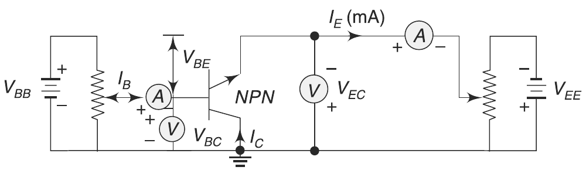
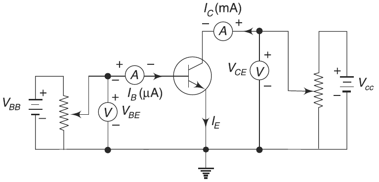
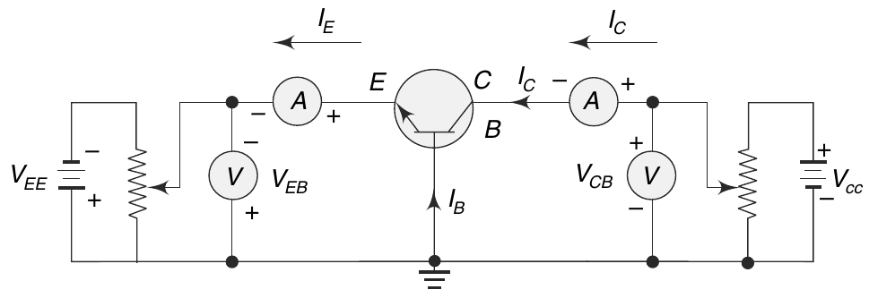

Small Signal Analysis of BJT
This section might summarizes the small signal analysis of a
Bipolar Junction Transistor (BJT) with H-parameter model,
Check this book
for more knowledge
and equations.
This is the circuit diagram of Common Collector:

This is the circuit diagram of Common Emmiter:

So the H-Parameter model and its Gain and Impedence are :
Current Gain \(A_i\) = - \(\frac{I_c}{I_b}\)
Voltage Gain \(A_v\) = - \(\frac{A_i * R_l}{Z_i}\)
Input Impedence \(Z_i\) = \(H_ie\) - \(\frac{H_re*H_fe*R_l}{1+H_oe*R_l}\)
Output Impedence \(Z_o\) = \(R_l\)
This is the circuit diagram of Common Base:
